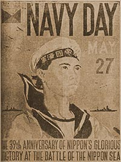

|
j
a v a s c r i p t |
May 27, 1944 — Navy Day

Navy Day Poster
Seven Filipino bands paraded through the Escolta this morning; no Japanese attended. Manolo Elizalde came out of Bilibid via Fort Santiago a few days ago, and now Father Theo Buttenbruch is out — anxious to regain some of the fifty pounds he lost! The white-haired, amiable 60 to 70 year-old wasn't beaten up. "I didn't talk," he said. The investment boom seems to have petered out due to a lack of sellers. A property that couldn't sell for P100,000 prewar is now bid at a million, but the owners won't sell — what would they do with the money? Telephones are the latest worry: The Japanese want them — in fact they want the whole trunk line beyond the Santa Mesa Bridge up to their new airfields in Quezon City. All telephone numbers beginning with 6 are to be taken out. Ours is (6-76-70.) Only employees of a few large firms have done forced labor so far. The work runs from 0830 to 1130, resting 15 minutes of every hour, then lunch till 1300 (bring your own food; the Japanese serve only tepid water). Work again from 1300 to 1600 with a break of sugared tea at 1500. At the end of the day, a translator tries to make sense of the 'thank you' speech from a high-ranking military official, then you go home with 200 grams of rice. So far, forced labor is one day a month. Irene, our maid, is now in the hospital with an infected lung (TB). Maurice and I are defraying expenses. Today we bought three-dozen ampoules of Calcium for P560 (prewar P10). Cirila left again for her home in Leyte, so we are now without servants. I did some washing today and it pooped me out. Ma does the cooking — we eat in the kitchen and wash our own dishes. I make the beds, Maurice takes care of the chickens, and Dad works the garden. The big NEWS is Italy. Twelve thousand elite German troops have been taken prisoner. The Fifth and Eighth Armies — Nettuno and Cassino boys — have joined forces and are pressing towards Rome, barely 30 miles away. Tribune: "30 foe planes downed over Otorishima†." I think the Americans lost only four planes over Marcus and Wake. The Japanese don't mention if they used any planes to oppose the attack. They didn't. Long Tokyo article: "Navy waiting for opportune moment to strike at enemy." La Vanguardia: "No danger of hunger in the Visayas." The mere existence of the article proves the opposite. There is no peace in the Visayas. Every time the Japanese mount a punitive expedition the people abandon their crops and flee. After a number of times, they give up on planting. The only areas under steady cultivation are near big towns where strong Japanese forces are stationed. Guerrillas raid towns for food, but for the most part guerrillas and Japanese avoid each other — the former lack the arms to take on the latter, who don't dare leave their defensive posts. † Wake Is. |
|
|
|
|